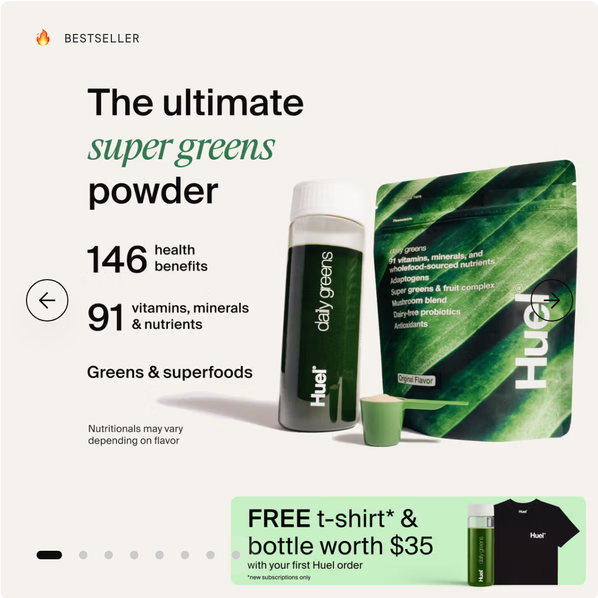

Seventy-five vitamins, minerals and whole-food sourced ingredients. One scoop. Foundational nutrition. Three phrases have carried the brand for a decade, and the creative team keeps re-lighting them.
What the formula can honestly carry, and what it cannot.
The thing the buyer already fears before they read the label.
Where the evidence stops and the adjective begins.